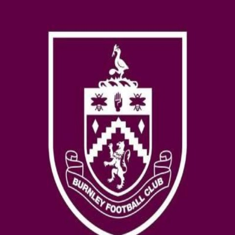

Case 01
Burnley FC / VSP Studios
Premier League club & production studio
Stand up a social-first content studio during a demanding launch phase
Content leadership · Team build · Workflow · Format development
THE SITUATION
A new club content studio being launched at pace, with an ambitious remit and a complex set of stakeholders across club, studio and commercial partners. Big expectations, a young operation and no established way of working.
WHAT WE DID
Took content leadership through the launch phase: set the structure the team worked to, defined what each channel was for, and put a production workflow in place that could survive a Premier League matchday calendar. Steered the team through a challenging period and prepared the operation to hand over to its next phase of leadership.
THE OUTCOME
A studio with direction, a repeatable process and a team that knew what good looked like — handed over stable rather than still in launch mode.
“He played an important role in leading the team through a challenging period and preparing the operation for its next phase. I would happily recommend Anthony to any organisation looking for an experienced content leader who can bring structure, direction and momentum to a complex brief.”